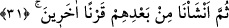
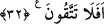

Belâ savuşur, binlerce yıldır beklediğin murâdına erersin
Sonra Nuh (a.s.) Allah tarafından izin verilmiş olarak kavminin helâkine duâ etmiş ve
ilâhî kahır gelmiştir. Çünkü onlara Rahmânî lütuf tesir etmemiştir. Duâdan maksad
yakarışını ızhâr etmektir. Bu Allah katında fayda verir.
Yahyâ b. Muâz (r.h.) şöyle demiştir: “İbâdet kilittir. Onun anahtarı duâdır. Anahtarın
dişleri de helal lokmadır.” Onun duâlarından birisi şu idi: “Ey Rabbim! İstediğim şeyi
Sen ihsan etmezsen, istediğin şekilde ona sabretmeyi bana lütfetmeni isterim.”
Âyette mü’minin dini ve dünyası bakımından kendisine mübârek kılınacak
mübarek/bereketli bir yer/ev istemesi gerektiğine işâret vardır.
Ey Sadî! Vatan sevgisine dâir sahih hadis[78] varsa da
Kişinin, burada doğdum diye sıkıntı içinde ölmesi doğru değildir
Peygamberlerin ve kâmil velîlerin hallerini düşünecek olsan onların çoğunun hicret
ettiklerini/yurtlarından çıkarıldıklarını görürsün. Çünkü zâlim bir topluluğun arasında
oturmakta bereket yoktur.
Fakir (Bursevî) der ki: Pek çok olan nimetlerinden dolayı Allah Teâlâ’ya hamd
ediyorum. Özellikle de defalarca meydana gelen hicretlerimden ve bu yerden, yâni
Bursa’dan dolayı. Öyle ki Bursa’ya hicret için tefe’ül ettiğimde “İşte güzel bir
memleket ve çok bağışlayan bir Rab!” (Sebe’, 34/15) âyeti denk gelmişti. Yine beni
zâlimler topluluğundan kurtardığından dolayı. Öyle ki bana düşmanlık eden ve öğüdümü
reddeden herkes helâk olanlarla birlikte helâk oldu. İbtilânın sonu kurtuluş, kahır lütuf,
celâl de cemâl oldu.
31. Sonra onların ardından bir başka nesil meydana getirdik.
“Sonra onların ardından” Nuh kavmini helâk ettikten sonra “bir başka nesil meydana
getirdik” var ettik. Onlar Âd kavmidir. Çünkü Allah Teâlâ, Hûd (a.s.)’dan naklederek
şöyle buyurmaktadır: “Düşünün ki O sizi, Nuh kavminden sonra onların yerine
getirdi.” (el-A‘râf, 7/69)
“
” bir zamanda beraber olan, yâni aynı zamanda yaşayan kimselere denir.